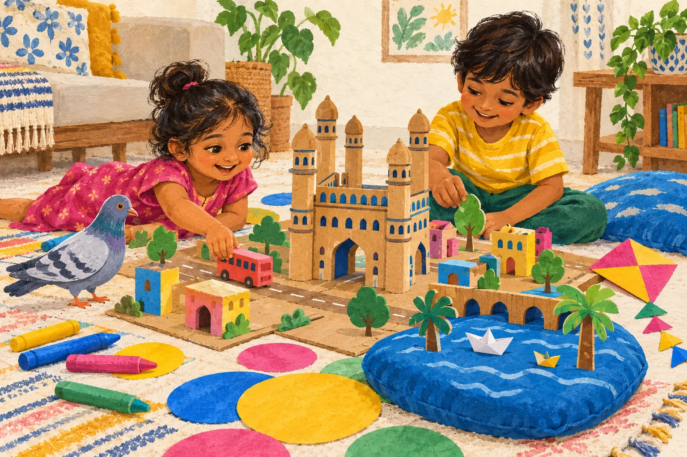

ADVENTURE 01 / CHARMINAR
The four-colour
post office
Piku has four letters and no idea where to deliver them. Build a tiny city and help the post find its people.
Sorting · story-making20–30 min
FOR LITTLE HYDERABADIS, AGES 3–7
A pigeon with a problem. A fort with a secret. A whole city hiding in your living room.
Original story-and-play adventures for the “what shall we do now?” part of parenting. Paper, crayons, and a grown-up are plenty.
No sign-up. No special supplies. No trip across town.

YOUR FIRST LITTLE ADVENTURE · FREE
A forgetful pigeon needs a picture of Charminar.
Luckily, there's a very good artist in this room.
READ TOGETHER
THEN PUT THE SCREEN DOWN
A LITTLE ADVENTURE, ALL YOURS
A printable HTML keepsake, made in your browser. Your child's name is not sent anywhere.
There's a whole little city to explore.THE FIRST HYDERABAD COLLECTION
A digital story-and-play pack. Each adventure has a read-aloud story, a low-prep game, a make-and-keep page, and a quieter way to play.
ADVENTURE 01 / CHARMINAR
Piku has four letters and no idea where to deliver them. Build a tiny city and help the post find its people.
ADVENTURE 02 / GOLCONDA
The gatekeeper has forgotten the hello that opens a pretend fort. Can your family invent a secret signal?
ADVENTURE 03 / HUSSAIN SAGAR
A paper lake has room for one more story. Invent its neighbourhood and send a wish across it—without any water.
ONE FAMILY · REPLAY WHENEVER YOU LIKE
Three original adventures, play sheets, and an explorer passport.
Printable A4 PDF, with no-printer alternatives. English with short Hinglish prompts.
The first edition is made. Sales open after family playtesting; no payment is collected yet.
A SMALL NOTE TO GROWN-UPS
You don't need to be a craft parent. Read the next bit, follow your child's idea, and let the postcard be lopsided.
Galli Club is being built by a dad in Hyderabad. The stories are original, the play is made for real homes, and the first edition is ready to be tried by real families.
Meet Animesh ↗The screen is the grown-up's cue card. Read a short part, then put it down while you play. Print the kit if you'd rather keep the whole adventure offline. There are no child accounts, scores, ads, or autoplay.
The quiet option avoids loud sound games. These missions use whole sheets and crayons instead of beads or small craft parts. The adventure is designed for ages 3–7; a grown-up still needs to supervise younger siblings and materials.
Not for this pack. Charminar, Golconda, and Hussain Sagar inspire make-believe play at home. The site is not a directions or outing-safety guide.
The places are real; Piku and the plots are invented. Each kit separates its small city fact from its story. We avoid turning local legends into claims of historical fact.
Stop or change the game. The age options are suggestions, not milestones. There are no learning-outcome promises, required answers, or completion targets. A five-minute good time still counts.